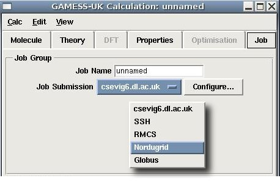
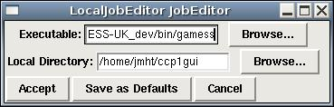
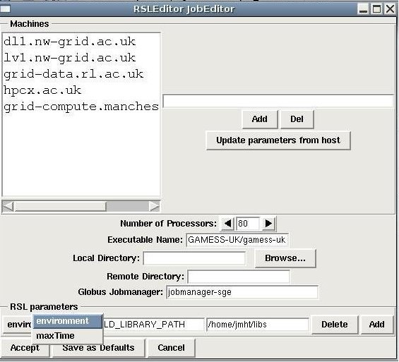

The Job Submission tools appear in the Job Tab of the Calculation Editors, which generally appears as the right-most of the Tabs. Clicking on the button labelled Job Submission, will bring up a list of the supported job submission types, allowing one to be selected. This is shown below for the GAMESS-UK job tab.

The different items in the list are the different job submission types that are supported. Pushing the Configure... button when a particular job submission type is selected will then bring up a job editor that can be used to configure the job in question.
The different types currently supported are listed below, together with links that point at more detailed documentaion for that job type.
When running locally, the job editor displayed below is used.

The Executable tools can be used to select the location of the binary that is to be run, and the Local Directory tool can be used to select the local directory that the job should run in. In both cases the path can be typed in directly or the Browse: tool can be used to browse to the file/directory.
If the Accept button is clicked, then the job editor will close and the selected values will be used for all jobs in this session.
If the Save As Defaults button is clicked, then the selected values will be saved by the CCP1GUI and will be used as the default settings for any new jobs when the CCP1GUI is next restarted.
If the Cancel button is clicked, then the job editor will close but none of the changes made will be saved.
Globus can be used to run jobs on remote machines that have the Globus middleware stack running on them. The CCP1GUI relies on the Globus client libraries to manage the submission and movement of data, and although the CCP1GUI only uses a small section of the Globus client library, it can still be rather awkward to get this installed on the Client machine. For when the CCP1GUI is runing on Linux/Mac OSX systems, the GROWL toolkit is the recommended way to install the relevant Globus libraries on the system.
When running via Globus, the job editor displayed below is used.

The machines section of the editor is used to select the machine to run the job on. To add a machine to the list of available ones, type the name of the machine in the box to the right of the list and click Add. To delete a machine from the list of available ones, select the machine from the list with the mouse and then click the Del button.
The machines that are highlighted are the ones that have been selected from the list. For Globus jobs, one, and only one machine should be selected as the target machine.
If a machine is selected and the Save As Defaults button at the bottom of the editor is clicked, all the values (number of processors, directory path etc.) are saved for that machine. Clicking the Update parameters from host when a machine is selected will fill out the different widgets with any values that were saved for that particular machine.
The remaining widgets set up various attributes of the job on the remote machine as described below.
| Number of processors | The number of processors to execute the job on. This sets the count RSL value. If count > 1, then the jobtype RSL is set to "mpi", otherwise it is set to "single". |
| Executable Name | This is the path to executable on the remote machine. If the path begins with a slash (/), then the path is expected to be a full path. If the path starts without a slash then the path is expected to be relative to the user's home directory on the machine |
| Local Directory | The directory on the local machine (i.e. the one where the CCP1GUI is being run from) where the CCP1GUI should write out the input files and copy back the data from the remote machine. |
| Remote Directory | This is the path to directory on the remote machine where the job will be run. If the path begins with a slash (/), then the path is expected to be a full path. If the path starts without a slash then the path is expected to be relative to the user's home directory on the machine |
| Globus Jobmanager | Unfortunately, when running with Globus, one needs to specify the jobmanager that the job is to be submitted to. By default Globus submits to to jobmanager-fork, which just forks a new process on the remote machine. For most parallel clusters , you will probably want to submit your job to the queuing system on the machine (e.g. LSF, Loadleveller, Sun GridEngine, etc). In these cases you should selected jobmanger-sge (for GridEngine) or jobmanager-lsf (for LSF), etc. |
In addition to the tools described above, it is possible to further fine-tune the job on the remote machine by setting various RSL Parameters. RSL is the Globus Resource Specification Languge, which specifies how the job should be executed on the remote resource. You can read all about it here.
The tools here allow a user to add supported RSL parameters to the job description. This can be used to set environment variables on the remote machine, specify the maximum runtime etc. To add a new RSL parameter, click the Add button to bring up a list of supported RSL parameters. To delete an RSL parameter, select the one in question from the menu on the far left and then click the Del button on the far right.